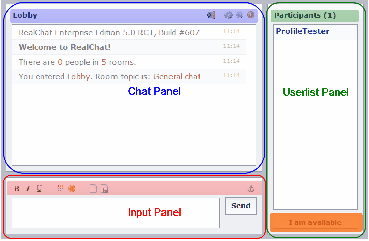

The Client Profiles page allows you to define what functionality is available within the client. Using profiles
allows you to ensure that your users do not have access to functionality which you do not want them to have. You can
also reduce the functionality of the client to avoid confusing your users with advanced functionality.
All changes will take effect when a user logs in. Users who are already logged in will retain their current
settings.
The profile list at the top of the Control Center allows you to choose which profile is active for editing. There
are a total of 5 profiles that can be modified according to your needs. Each of the 5 profiles is pre-configured for
common chat capabilities.
Profile Name - allows you to define the name of the profile which will be displayed in the Code Generator.
Please
select a name which is memorable and descriptive.
The User Permissions section allows you to control what advanced functionality is available to your users in the Chat Window. You can modify the following settings:
The settings dialog can be accessed within the client and it allows users to customize the appearance of their chat
room. This section of the client profiles page allows you to determine what controls are available to your users.
Each setting corresponds to a checkbox within the settings dialog. If the setting is enabled in the Client Profile,
it will also be enabled by default in the users client settings dialog. The user can still override each setting,
unless the Settings button is disabled in UI Elements section below.
The UI Elements section is used to customize what functionality is available to your users within the chat window.
If an element is disabled, it will not be available for usage within the chat client.
After you make changes, you can use the Apply & Preview button to see the effects of your changes.
The client interface is composed of three panels. These panels can be enabled and disabled independently. Within
each panel there may be additional areas which can be enabled or disabled.

Client Screen with Panels Labeled
Chat panel - The upper section of the chat client (highlighted in blue), the chat panel contains all messages
which have been typed. If this panel is disabled, the user will be unable to view any of the messages which are
typed by other users.
Chat panel options bar - The chat panel options bar is shaded with blue in the image above. It contains the
name of the current room as well as controls for changing rooms, changing settings, showing the client help, and
closing the chat client. Each of these controls can be hidden individually.
Input panel - The Input Panel is highlighted in red. The Input Panel allows users to type and submit messages
so that they can be read by other users. If you would like to have a read only chat, you can disable the input
panel.
Input panel options bar - The input panel options bar is shaded with red. It contains controls to format the
message, clear the chat panel, save the chat session, and control the auto scroll behavior. Each control can be
hidden individually.
Userlist panel - The Userlist panel is outlined with a green rectangle above. It contains a list of all of
the users who are currently taking part in the chat. You may want to disable this panel if you do not want users to
know about each other. For example, if you are doing a sales talk or seminar, it may not be appropriate to let the
attendees talk to each other.
Userlist panel options bar - The Userlist panel options bar is shown in shaded green. It contains the number
of participants in the current room.
Custom area (online/away indicator) - The custom area is displayed in shaded orange and it allows the user to
indicate if they are currently available to chat with.
UI Buttons - UI buttons are displayed on either the Chat Panel options bar or the Input panel options bar. If
you deselect a button, it will not be displayed in the chat client. The following buttons can be disabled Send,
Bold, Italic, Underline, Color, Emoticons, Clear, Save, Autoscroll, Rooms, Settings, Help, and Exit.